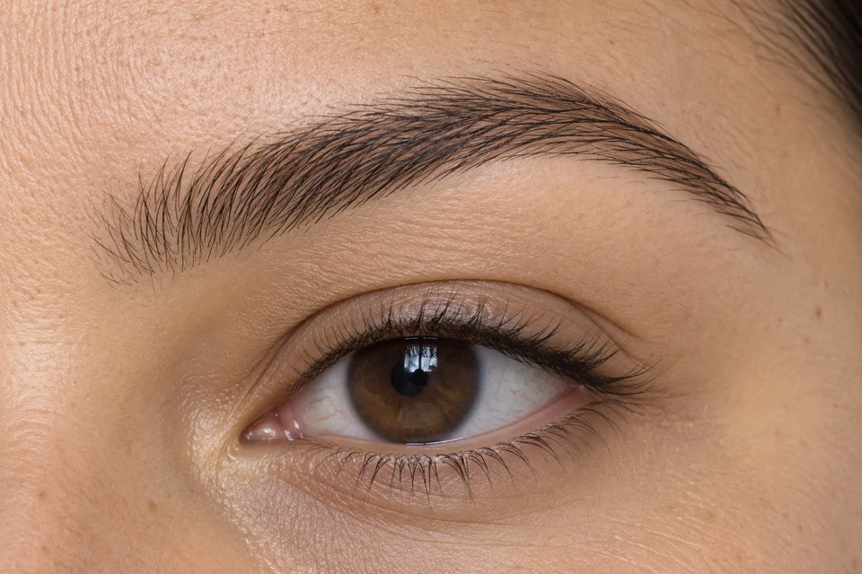
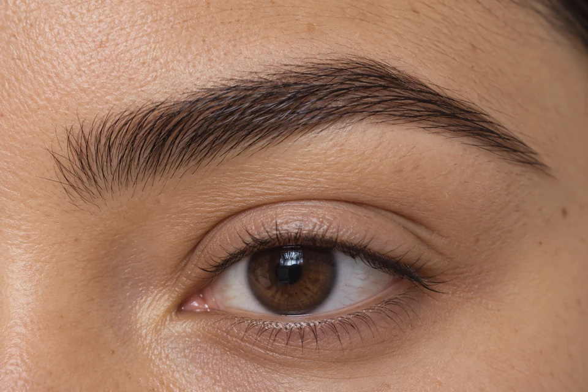
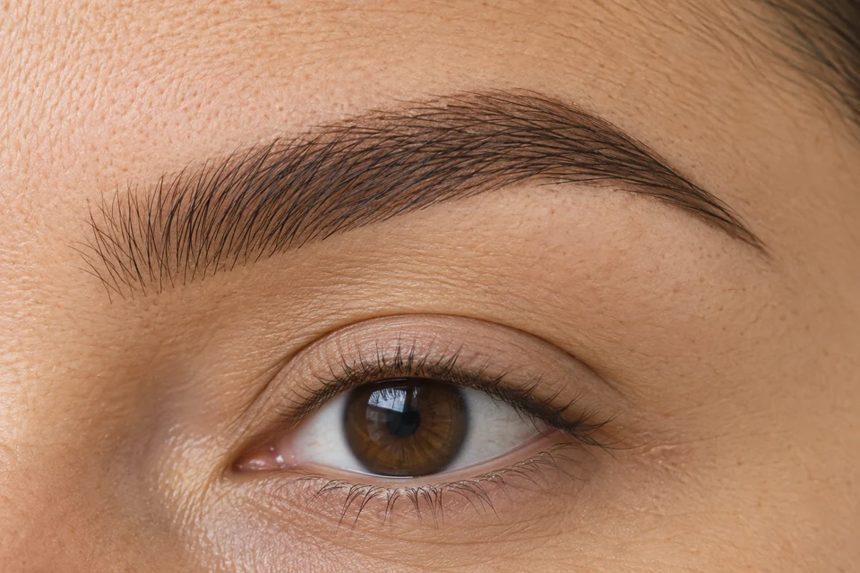
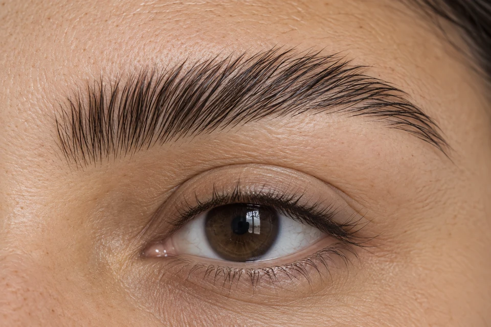

{kind=link}
01
Design natural
Forma. Define o contorno e remove os fios fora do desenho, preservando a cor natural.
ESPECIALIDADE 03
Forma, cor ou fios alinhados: veja o que muda em cada técnica.

TÉCNICAS EM DESTAQUE
Compare de perto o que cada opção muda: formato, cor, preenchimento ou direção dos fios. Toque na imagem para ver os detalhes.
Valores de referência em reais (R$). Ellen confirma a combinação dos cuidados, o valor final e a disponibilidade.
Forma. Define o contorno e remove os fios fora do desenho, preservando a cor natural.

Cor. Realça o tom dos pelos claros. O foco é a cor dos fios, com acabamento natural.

Preenchimento. Colore os fios e deixa um sombreado temporário na pele, para um efeito mais preenchido.

Direção dos fios. Reposiciona os pelos para cima ou na diagonal, destacando a textura e o volume natural.
IMAGENS EDITORIAIS ILUSTRATIVAS · GERADAS POR IA · NÃO REPRESENTAM TRABALHOS REALIZADOS PELO STUDIO
SEU EFEITO
O design pode acompanhar a coloração, a henna ou a laminação. O formato e a intensidade são escolhidos conforme seus fios e sua preferência. Técnicas e valores sujeitos à confirmação com Ellen.
Design natural para organizar o contorno, sem adicionar cor.
Coloração para realçar a tonalidade dos pelos.
Design com henna para criar um sombreado temporário na pele.
Brow lamination para mudar a direção dos pelos e realçar a textura.
{kind=link}
{kind=link}
{kind=link}